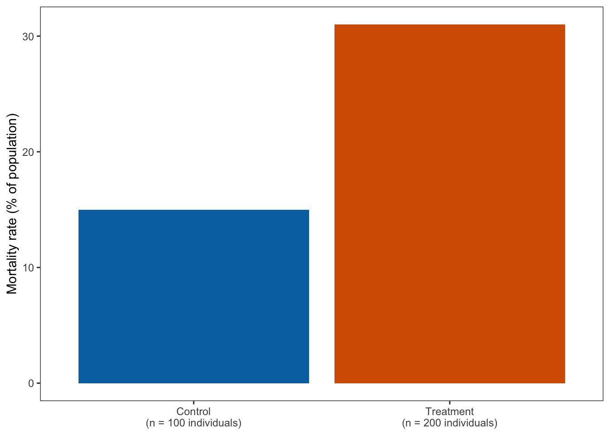
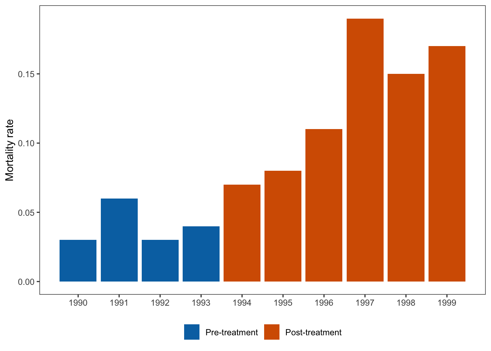
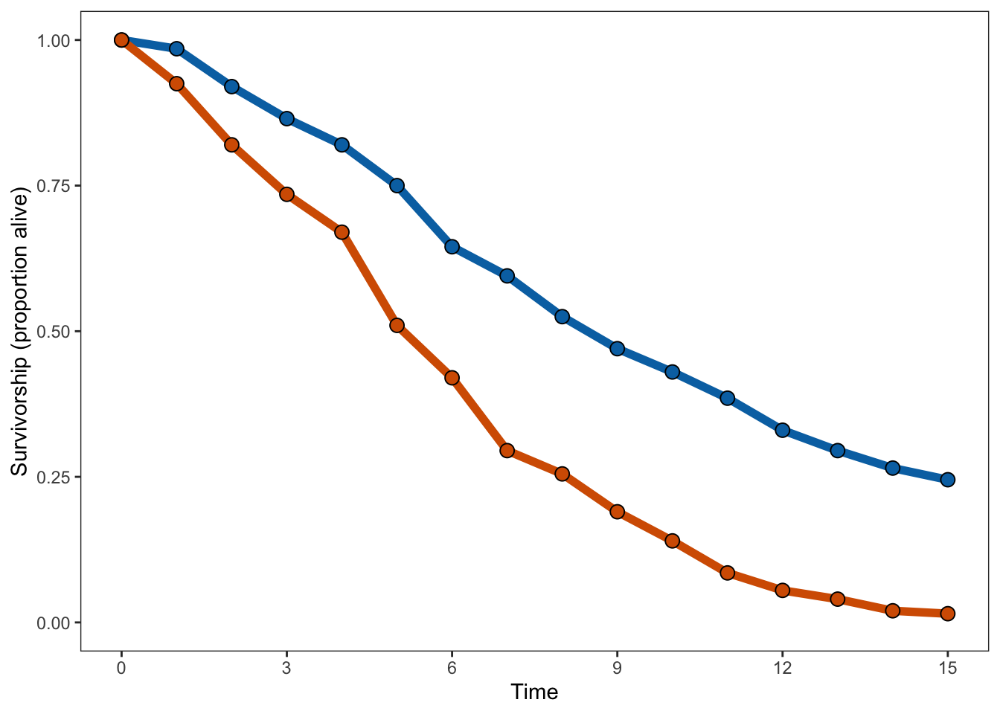
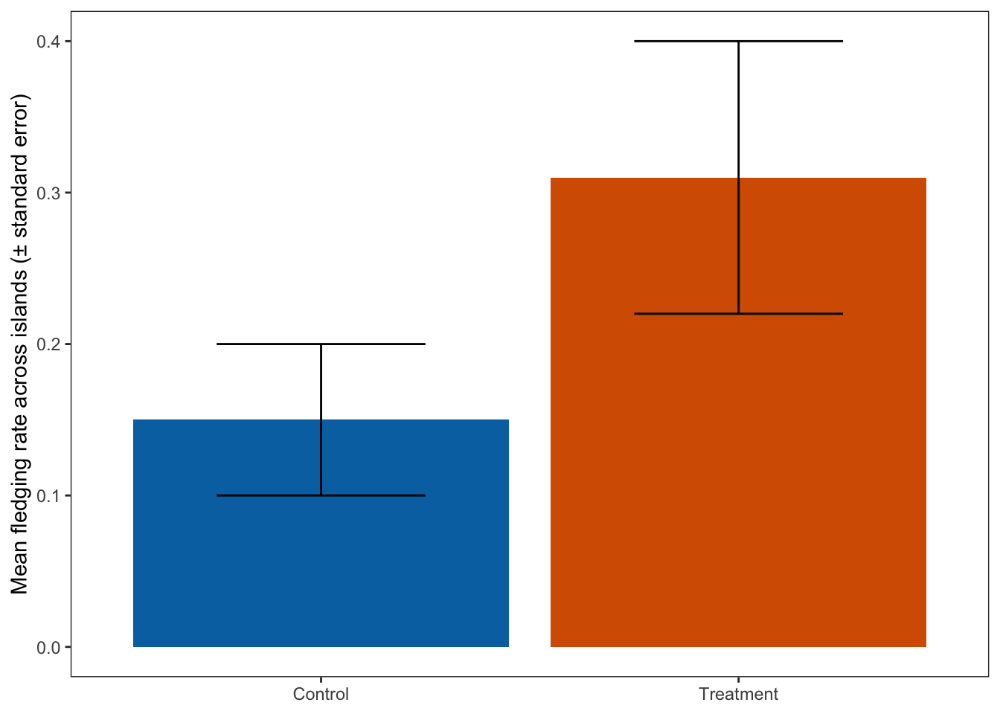
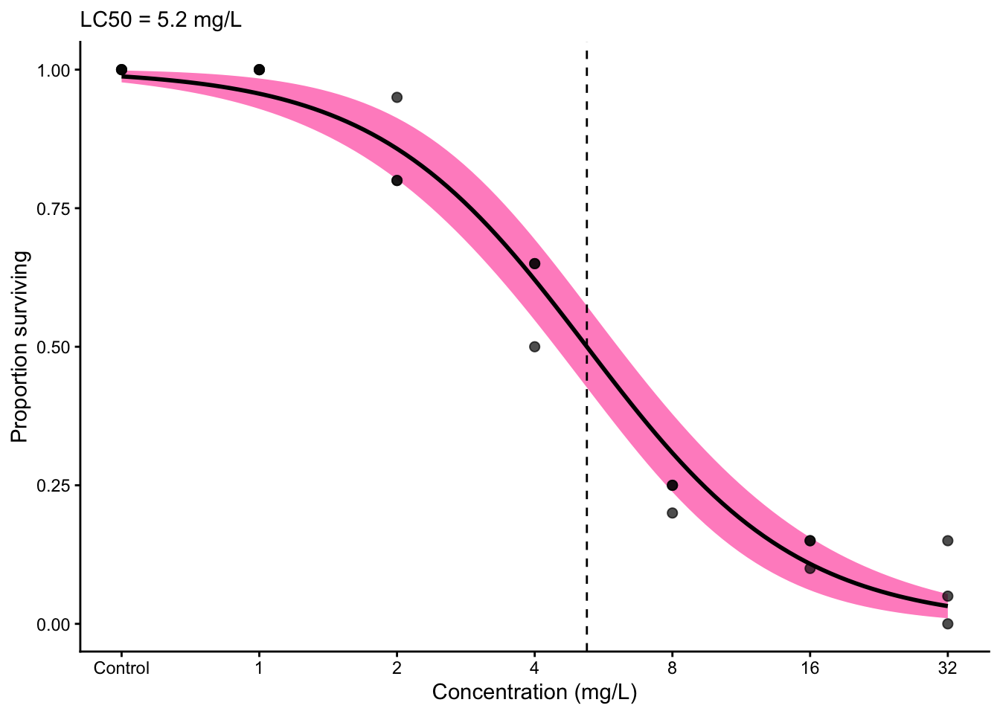
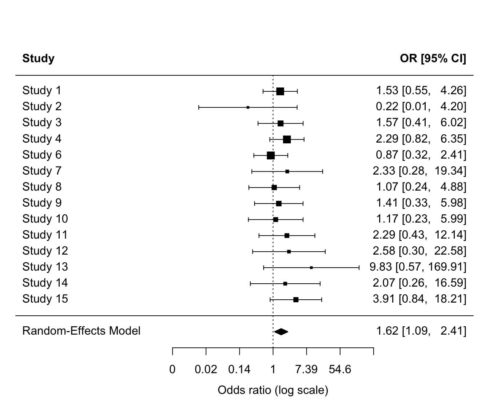

| fledged_predators_present | failed_predators_present | fledged_predators_absent | failed_predators_absent |
|---|---|---|---|
| 9 | 21 | 15 | 15 |
Discrete outcomes between two groups: lnOR and lnRR
Some things are just black and white
Many outcomes in ecology take one of two states. An animal is alive or dead, a nest fledges or fails, a plant is eaten or it is not.
Where such an outcome is compared between two groups, the effect size is the log odds ratio (lnOR) or the log risk ratio (lnRR). Both are calculated from a 2×2 table of counts: the number of individuals in each group that did, and did not, experience the outcome. Papers seldom report that table directly. More often they give a proportion and a sample size, a bar with an error bar, or a curve, and the counts have to be recovered. This page describes how to do so for the forms in which the data usually appear.
Where the predictor is continuous, discrete outcomes can instead be analyzed with Zr effect sizes.
Database design
We recommend a wide extraction database, with one column for each cell of the 2×2 table.
Suppose that you are meta-analyzing the effect of introduced predators on the breeding success of birds, and that the articles report the proportion of monitored nests that fledged on islands with and without predators. Each comparison corresponds to a contingency table:
| Fledged | Failed | |
|---|---|---|
| Predator present | \(a\) | \(b\) |
| Predator absent | \(c\) | \(d\) |
The database then needs four columns, one for each cell. Below, fledged_predators_present, failed_predators_present, fledged_predators_absent and failed_predators_absent hold \(a\), \(b\), \(c\) and \(d\), which are the arguments ai, bi, ci and di of metafor::escalc(). A real database would also carry an article ID, an effect size ID and probably (many) other columns:
A template database can be downloaded here:
The sections that follow take the common ways of reporting these data in turn, beginning with the simplest.
The easy cases
Some data need little work. The simplest are papers that report the four counts themselves, which can be entered as they stand.
Proportion or % data with total population

Nearly as simple are papers that report the percentage of each group that experienced the outcome, together with the size of each group (which the authors have, with luck, given in the text). Multiply each percentage by its group size to recover the number of individuals with the outcome, and subtract that number from the group size to obtain the number without it. For the figure above:
| Mortality | \(n\) | Died | Survived | |
|---|---|---|---|---|
| Control | 15% | 100 | \(0.15 \times 100 = 15\) | \(100 - 15 = 85\) |
| Treatment | 31% | 200 | \(0.31 \times 200 = 62\) | \(200 - 62 = 138\) |
The products should fall close to whole numbers. Round the products to whole integers and make sure that they add up to the reported sample size. Where they do not, either the percentage has been read imprecisely from the figure or the entered sample size is not correct.
Missing data
No control group
Some experiments report only the treated group and compare it with a fixed expectation, usually 50%. To calculate lnOR from such a study, the same assumption has to be written into the database: the two control columns are filled with an event split of the treatment group’s total. If a study reports only:
| Outcome A | Outcome B | |
|---|---|---|
| Treatment | 35 | 15 |
the row total is \(35 + 15 = 50\), and each control cell becomes \(0.5 \times 50 = 25\):
| Outcome A | Outcome B | |
|---|---|---|
| Treatment | 35 | 15 |
| Control | 25 | 25 |
The control row here is an assumption and not an observation. Effect sizes built in this way should be flagged so that they can be removed in a sensitivity analysis, or else excluded under your a priori inclusion criteria.
No sample size
lnOR and lnRR are calculated from counts, so a proportion without its sample size is meaningless. If the sample size is not given elsewhere in the paper and cannot be obtained from the authors, the study has to be excluded.
Other cases
Aggregating multiple measurements
Some studies report a response, such as annual mortality, in each of several years before and after an intervention (the eradication of a predator, say, or a change in management policy).

There are two main approaches for this kind of data:
-Use the outcomes from the final year before treatment -Sum across years within each treatment period.
In the latter case, for each year, multiply the mortality rate by the number of individuals monitored (which is, with luck, reported) to obtain the number that died. The extracted data would look like this:
| year | treatment | total_individuals | number_deceased | mortality_rate |
|---|---|---|---|---|
| 1990 | Pre | 150 | 5 | 0.03 |
| 1991 | Pre | 131 | 8 | 0.06 |
| 1992 | Pre | 160 | 4 | 0.03 |
| 1993 | Pre | 171 | 7 | 0.04 |
| 1994 | Post | 153 | 11 | 0.07 |
| 1995 | Post | 158 | 13 | 0.08 |
| 1996 | Post | 111 | 12 | 0.11 |
| 1997 | Post | 95 | 18 | 0.19 |
| 1998 | Post | 98 | 15 | 0.15 |
| 1999 | Post | 101 | 17 | 0.17 |
Then sum total_individuals and number_deceased within each period, and obtain the number living (number_living) by subtraction:
| treatment | total_individuals | number_deceased | number_living |
|---|---|---|---|
| Pre | 612 | 24 | 588 |
| Post | 716 | 86 | 630 |
Once the table is cast wide by treatment, the columns number_deceased and number_living supply the contingency table needed to calculate lnOR:
library("tidyr")
dat.sum |>
pivot_wider(names_from = "treatment",
values_from = c("total_individuals",
"number_deceased",
"number_living") ) |>
knitr::kable()| total_individuals_Pre | total_individuals_Post | number_deceased_Pre | number_deceased_Post | number_living_Pre | number_living_Post |
|---|---|---|---|---|---|
| 612 | 716 | 24 | 86 | 588 | 630 |
Where the number of individuals is not reported, the counts cannot be recovered. The best remaining option is to treat each year as a replicate: calculate the mean ± SD of the annual proportions in each period and use these to calculate an SMD with the number of years as your sample size. Because the values are proportions, they should be transformed first (see here).
The unit of replication in the resulting effect size is the year and not the individual. It should not be compared directly with lnOR type data in which individuals are the unit of replication.
escalc supports alternative estimands for matched pairs contingency tables, which would be more appropriate for this type of data. However, the resulting effect size estimates are not comparable to standard lnOR or lnRR effect sizes. For that reason and must be meta-analyzed only with other mached pair effect sizes.
We therefore assume analysts will use standard lnOR or lnRR effect sizes. However, be sure to conduct sensitivity analyses excluding these temporally non-independent data from your meta-analysis.
Survivorship curves

A survivorship curve shows the proportion of each group still alive at successive times. To build a contingency table from it, choose a time point, read off the proportion alive in each group (\(p_1\) and \(p_2\)), and multiply each by the number of individuals in that group at the start of the experiment (\(n_1\) and \(n_2\)).
This gives the number alive (\(a\) and \(c\)). The number dead (\(b\) and \(d\)) is found by subtracting the number alive from the starting number. At time 6 in the figure above, with 200 individuals in each group at the start:
| Time | Proportion alive (\(p\)) | N at start (\(n\)) | Alive (\(a\), \(c\)) | Dead (\(b\), \(d\)) | |
|---|---|---|---|---|---|
| Group 1 (blue) | 6 | 0.64 | 200 | 128 | 72 |
| Group 2 (red) | 6 | 0.42 | 200 | 84 | 116 |
This arithmetic assumes that every individual was followed to the chosen time point. If individuals were lost or removed before then (censored), the curve is no longer a simple proportion of the starting number, and the data are better treated as time-to-event data (see here).
A survivorship curve yields as many effect sizes as it has time points, and these are not independent of one another. The difficulty is the usual one with time series and can arise with any effect size. We recommend extracting the data for every time point and using random effects to control for temporal autocorrelation in the meta-analytic model (see here). The alternative is to analyze a single time point from each curve. If you do this, fix the rule for choosing it in advance (the final time point, for example) because choosing the time point at which the groups differ most selects for large effects.
Mean±error discrete outcomes
Discrete outcomes are sometimes summarized as a mean ± error across trials, sites or islands. A paper might, for example, monitor nests on several islands, calculate the proportion that fledged on each, and report the mean and standard error of those proportions for each treatment.
Data in this form lend themselves naturally to SMD or lnRoM type effect sizes. The sample size behind the mean ± error is, however, the number of islands and not the number of nests. If individuals (or nests) are the unit of replication in the rest of your dataset, an effect size calculated in this way will carry far less weight in your models than the others.

Note also that the figure presents the standard error and not the standard deviation. Converting one to the other requires the sample size that the authors used to calculate the standard error, which is again the number of trials, sites or islands.
The alternative is to reconstruct the counts and calculate an lnOR type effect size with individuals as the unit of replication. This is done by simulating the binomial or beta-binomial distribution that lies behind the mean ± SD summary, and it requires four pieces of information:
the number of sites used to calculate the standard error;
the number of individuals monitored at each site (or the total across all sites, divided by the number of sites);
the mean proportion reported by the authors;
the standard deviation reported by the authors (or in the figure above, converted from the reported standard error).
Warning
Reconstructing the underlying data in this way is a dark magic experimental method. Use carefully.
To work through the example, suppose that the figure above comes from a paper reporting nest fledging rates on 10 islands where rats were poisoned (the treatment) and on 10 islands where they were left alone (the control). Thirty nests were monitored on each island, or 300 per treatment. We add these numbers to the data.table extracted from the figure and convert the standard error (\(se\)) to a standard deviation (\(sd\)):
| mean | group | se | n_sites | n_per_site | sd |
|---|---|---|---|---|---|
| 0.15 | Control | 0.05 | 10 | 30 | 0.1581139 |
| 0.31 | Treatment | 0.09 | 10 | 30 | 0.2846050 |
Next, we check whether the reported standard deviation is larger than a binomial distribution would produce. If every nest on every island had the same probability of fledging, the standard deviation of the island proportions would be \(sd_{theoretical} = \sqrt{p(1-p)/n}\), where \(p\) is the mean proportion and \(n\) is the number of nests per island. A reported standard deviation greater than \(sd_{theoretical}\) indicates overdispersion. This means we need to use the beta-binomial distribution for our data reconstruction. Otherwise we use the binomial distribution:
[1] TRUEThe reported standard deviations exceeds the theoretical ones, so these data are beta-binomial and not truly binomial. (For data that are not overdispersed, see here and here for how to draw from the binomial distribution).
We draw from the beta-binomial distribution with the R package extraDistr (Wolodzko 2023). The distribution is described by two shape parameters, \(\alpha\) (“alpha”) and \(\beta\) (“beta”), which are calculated from the mean and the variance (\(Var = sd^2\)) by way of an intermediate variable r. See here for the formulas. We add all of these to each row of dt:
library("extraDistr")
dt[, var := sd^2]
dt[, r := (mean * (1 - mean) / var) - 1]
dt[, alpha := mean * r]
dt[, beta := (1 - mean) * r]
knitr::kable(dt[, .(group, mean, sd, var, r, alpha, beta)], digits = 3)| group | mean | sd | var | r | alpha | beta |
|---|---|---|---|---|---|---|
| Control | 0.15 | 0.158 | 0.025 | 4.100 | 0.615 | 3.485 |
| Treatment | 0.31 | 0.285 | 0.081 | 1.641 | 0.509 | 1.132 |
A single draw from the beta-binomial distribution returns a vector with one element for each site, each giving the number of nests that fledged there. For the first row of dt (the control):
[1] 0 8 4 4 3 6 7 23 0 6The sum of this vector is the total number of nests that fledged across all sites in that treatment. The full workflow repeats the draw for each row of the extracted data (here only two) and stores the sum:
for(i in 1:nrow(dt)){
fledged_per_site <- rbbinom(n = dt$n_sites[i],
size = dt$n_per_site[i],
alpha = dt$alpha[i],
beta = dt$beta[i])
dt[i, n_fledged := sum(fledged_per_site)]
}
# Now calculate the total number of nests and the number that failed:
dt[, total_individuals := n_per_site * n_sites]
dt[, n_failed := total_individuals - n_fledged]
knitr::kable(dt[, .(group, n_sites, n_per_site, total_individuals,
n_fledged, n_failed)])| group | n_sites | n_per_site | total_individuals | n_fledged | n_failed |
|---|---|---|---|---|---|
| Control | 10 | 30 | 300 | 17 | 283 |
| Treatment | 10 | 30 | 300 | 111 | 189 |
The columns n_fledged and n_failed are the ingredients for lnOR or lnRR. The sample size has risen from 10 per treatment (the number of sites) to 300 per treatment (the number of nests), and the unit of replication is now comparable with that of the other effect sizes in an lnOR meta-analysis built on individuals.
LC50 and related metrics
Many laboratory toxicity studies report an LC50 (median lethal concentration): the concentration of a substance estimated to kill 50% of exposed individuals over a fixed exposure period (e.g., 96-h LC50). The LC50 is estimated by fitting a dose-response model, often log-logistic or probit, to the proportion of individuals surviving at each test concentration, and reading off the concentration at which the fitted curve crosses 50%.
A typical figure looks like this:
Estimated effective doses
Estimate Std. Error Lower Upper
e:1:50 5.20113 0.41599 4.38582 6.01645
The points are individual replicates, the solid line is the fitted dose-response curve with its 95% confidence interval (grey band), and the dashed line marks the estimated LC50.
Several closely related metrics are estimated and interpreted in the same way:
- EC50 (median effective concentration): the concentration producing a specified non-lethal effect (e.g., immobilization, reduced growth or reproduction) in 50% of individuals, or a 50% reduction in a continuous response.
- LD50 (median lethal dose): as LC50, but expressed as an administered dose (e.g., mg/kg body weight) and not as an environmental concentration.
- LT50 (median lethal temperature): the temperature at which 50% of individuals die, commonly used in thermal tolerance studies and estimated by fitting the same type of curve with temperature on the x-axis. In toxicology, LT50 is also used for median lethal time (the exposure duration at which 50% of individuals have died), so check how each study defines it.
- ET50 (median effective time): the exposure time at which 50% of individuals show the specified effect, i.e., the time-based equivalent of EC50.
Other percentiles (e.g., LC10, EC20) are also common, particularly where the interest is in low-effect thresholds.
These metrics are already summaries of a dose-, temperature- or time-response curve. They are not contrasts between a treatment and a control group, and there is no established way of converting them to lnOR or lnRR. If your dataset contains many of them, consider meta-analyzing the metric itself (e.g., on the log scale). Survivorship curves and other raw data from the remaining studies can then be converted to the same metric (LC50, say), and the sampling variance can either be derived from a formula or simulated with SAFE.
Single-group proportion effect sizes, especially probit-transformed proportions, may also be able to describe data of this kind, but the results may be difficult to compare with the other effect sizes in your dataset.
Model estimates
Some studies report a logistic regression in place of the counts. Where the model is a logistic regression (a binomial GLM with a logit link) and the predictor is the two-level treatment, the unstandardized coefficient for the treatment is itself the lnOR, and the square of its standard error is the sampling variance. No conversion is needed:
# e.g., a reported treatment coefficient of 0.85 with a standard error of 0.32
yi <- 0.85
vi <- 0.32^2Three things should be checked before such an estimate is combined with lnORs calculated from 2×2 tables:
- Direction. Establish which treatment level is the reference and which outcome is modeled as the “success”. Reversing either flips the sign of the coefficient.
- Adjustment. A coefficient from a model that includes covariates or random effects is conditional on them. It tends to lie further from zero than the unadjusted lnOR from a 2×2 table, even where the covariates are balanced between treatments, so these estimates should be flagged for a sensitivity analysis or (our preference) excluded.
- Link function. Coefficients from probit or complementary log-log models are not lnORs.
The factor of 1.81 that is sometimes quoted in this context (\(\pi/\sqrt{3}\)) does a different job. It converts a standardized mean difference to an lnOR (\(lnOR = d \times \pi/\sqrt{3}\), with \(Var(lnOR) = Var(d) \times \pi^2/3\)), which is useful where some studies measure an outcome on a continuous scale and others report it as two states (Chinn 2000). It should not be applied to a logistic regression coefficient.
Zero cells
When any cell of the 2×2 table is zero, the odds ratio and its variance cannot be calculated. The conventional remedy is a continuity correction: 0.5 is added to every cell of the studies affected, and to those studies only (Sweeting et al. 2004). Studies with no events in either group provide no information about the odds ratio and are excluded.
escalc() applies the 0.5 correction by default. We nevertheless set the arguments explicitly below, so that the decision is visible in the code and is not left to the software.
Continuity corrections can bias the odds ratio towards 1, particularly where events are rare or group sizes are unbalanced. The analysis should therefore be repeated without the studies that needed a correction as a sensitivity analysis. Where zero cells are common because the event itself is very rare, methods that need no correction are preferable (see here).
A simulated example
To illustrate, we simulate 15 studies comparing an exposed group with a control group. The outcome is rare, with a risk of 3% in the control group and a true odds ratio of 2. Group sizes range from 30 to 200 individuals per group. One study is set to have no events in the exposed group, and one to have no events in either group.
set.seed(2026)
k <- 15 # number of studies
dat <- data.frame(
study = paste("Study", 1:k),
n1i = sample(30:200, k, replace = TRUE), # exposed group size
n2i = sample(30:200, k, replace = TRUE) # control group size
)
# Rare outcome: ~3% risk in controls, true OR of 2
p_control <- 0.03
true_or <- 2
p_exposed <- (true_or * p_control) / (1 - p_control + true_or * p_control)
dat$ai <- rbinom(k, dat$n1i, p_exposed) # events, exposed
dat$ci <- rbinom(k, dat$n2i, p_control) # events, control
# Guarantee one single-zero study and one double-zero study
dat$ai[2] <- 0
dat$ai[5] <- 0
dat$ci[5] <- 0
# Non-events
dat$bi <- dat$n1i - dat$ai
dat$di <- dat$n2i - dat$ci
knitr::kable(dat[, c("study", "ai", "bi", "n1i", "ci", "di", "n2i")])| study | ai | bi | n1i | ci | di | n2i |
|---|---|---|---|---|---|---|
| Study 1 | 11 | 139 | 150 | 6 | 116 | 122 |
| Study 2 | 0 | 67 | 67 | 4 | 135 | 139 |
| Study 3 | 4 | 70 | 74 | 5 | 137 | 142 |
| Study 4 | 11 | 129 | 140 | 6 | 161 | 167 |
| Study 5 | 0 | 120 | 120 | 0 | 175 | 175 |
| Study 6 | 7 | 130 | 137 | 9 | 146 | 155 |
| Study 7 | 7 | 186 | 193 | 1 | 62 | 63 |
| Study 8 | 4 | 158 | 162 | 3 | 127 | 130 |
| Study 9 | 6 | 54 | 60 | 3 | 38 | 41 |
| Study 10 | 3 | 70 | 73 | 3 | 82 | 85 |
| Study 11 | 5 | 82 | 87 | 2 | 75 | 77 |
| Study 12 | 5 | 122 | 127 | 1 | 63 | 64 |
| Study 13 | 12 | 105 | 117 | 0 | 41 | 41 |
| Study 14 | 11 | 165 | 176 | 1 | 31 | 32 |
| Study 15 | 11 | 97 | 108 | 2 | 69 | 71 |
We first flag the studies with at least one zero cell, and separate those with no events in either group (which are excluded) from the remainder (which receive the correction):
# Studies with at least one zero cell
dat$zero_cell <- with(dat, ai == 0 | bi == 0 | ci == 0 | di == 0)
# Studies with zero events in both groups
dat$double_zero <- with(dat, ai == 0 & ci == 0)
# Studies that receive the 0.5 correction (zero cell, but not double-zero)
dat$corrected <- dat$zero_cell & !dat$double_zero
n_corrected <- sum(dat$corrected)
n_double_zero <- sum(dat$double_zero)Main analysis
The main analysis adds 0.5 to every cell of the studies with a zero cell (add = 1/2, to = "only0") and drops the studies with no events in either group (drop00 = TRUE). These are the escalc defaults but we’ll write them in below to be explicit:
es_main <- escalc(measure = "OR",
ai = ai, bi = bi, ci = ci, di = di,
data = dat,
add = 1/2, to = "only0",
drop00 = TRUE)
# Make sure there's an observation ID unique to each effect size:
es_main$es_id <- paste(es_main$study, 1:nrow(es_main))
res_main <- rma.mv(yi, vi, random = ~1|study/es_id,
data = es_main, method = "REML")
res_main
Multivariate Meta-Analysis Model (k = 14; method: REML)
Variance Components:
estim sqrt nlvls fixed factor
sigma^2.1 0.0000 0.0000 14 no study
sigma^2.2 0.0000 0.0000 14 no study/es_id
Test for Heterogeneity:
Q(df = 13) = 7.4091, p-val = 0.8799
Model Results:
estimate se zval pval ci.lb ci.ub
0.4848 0.2015 2.4056 0.0161 0.0898 0.8798 *
---
Signif. codes: 0 '***' 0.001 '**' 0.01 '*' 0.05 '.' 0.1 ' ' 1The warning message produced by the model run is because one effect size was incalculable.
study n1i n2i ai ci bi di zero_cell double_zero corrected yi vi es_id
1 Study 5 120 175 0 0 120 175 TRUE TRUE FALSE NA NA Study 5 5 This is because both ai and ci were 0, leading to NA values for yi and vi.
forest(res_main, slab = dat$study, atransf = exp,
xlab = "Odds ratio (log scale)",
header = c("Study", "OR [95% CI]"))
Sensitivity analysis
The sensitivity analysis excludes every study with a zero cell, so that no correction is applied at all:
es_sens <- escalc(measure = "OR",
ai = ai, bi = bi, ci = ci, di = di,
data = dat,
subset = !zero_cell)
res_sens <- rma(yi, vi, data = es_sens, method = "REML")
res_sens
Random-Effects Model (k = 12; tau^2 estimator: REML)
tau^2 (estimated amount of total heterogeneity): 0 (SE = 0.1974)
tau (square root of estimated tau^2 value): 0
I^2 (total heterogeneity / total variability): 0.00%
H^2 (total variability / sampling variability): 1.00
Test for Heterogeneity:
Q(df = 11) = 4.1184, p-val = 0.9663
Model Results:
estimate se zval pval ci.lb ci.ub
0.4862 0.2054 2.3670 0.0179 0.0836 0.8888 *
---
Signif. codes: 0 '***' 0.001 '**' 0.01 '*' 0.05 '.' 0.1 ' ' 1Comparison
comparison <- data.frame(
analysis = c("Main (0.5 added to zero-cell studies)",
"Sensitivity (zero-cell studies excluded)"),
k = c(res_main$k, res_sens$k),
OR = exp(c(res_main$beta, res_sens$beta)),
ci.lb = exp(c(res_main$ci.lb, res_sens$ci.lb)),
ci.ub = exp(c(res_main$ci.ub, res_sens$ci.ub)),
I2 = c(res_main$I2, res_sens$I2)
)
knitr::kable(comparison, digits = 2,
col.names = c("Analysis", "k", "OR", "Lower 95% CI",
"Upper 95% CI", "I² (%)"))| Analysis | k | OR | Lower 95% CI | Upper 95% CI | I² (%) |
|---|---|---|---|---|---|
| Main (0.5 added to zero-cell studies) | 14 | 1.62 | 1.09 | 2.41 | 0 |
| Sensitivity (zero-cell studies excluded) | 12 | 1.63 | 1.09 | 2.43 | 0 |
In this example, the 0.5 correction was applied to 2 studies with a zero cell. The number of studies excluded for having no events in either group was 1. The pooled odds ratio was 1.62 (95% CI 1.09 to 2.41) in the main analysis and 1.63 (95% CI 1.09 to 2.43) once the corrected studies were excluded. Where the two estimates agree, the correction has had little influence on the result. Where they differ, both should be reported.
References
Chinn, S. 2000. A simple method for converting an odds ratio to effect size for use in meta‐analysis. Stat. Med. 19:3127–3131.
Sweeting, M. J., A. J. Sutton, and P. C. Lambert. 2004. What to add to nothing? Use and avoidance of continuity corrections in meta-analysis of sparse data. Stat. Med. 23:1351–1375.
Wolodzko, T. 2023. extraDistr: Additional univariate and multivariate distributions (R package, version 1.10. 0, 2020).